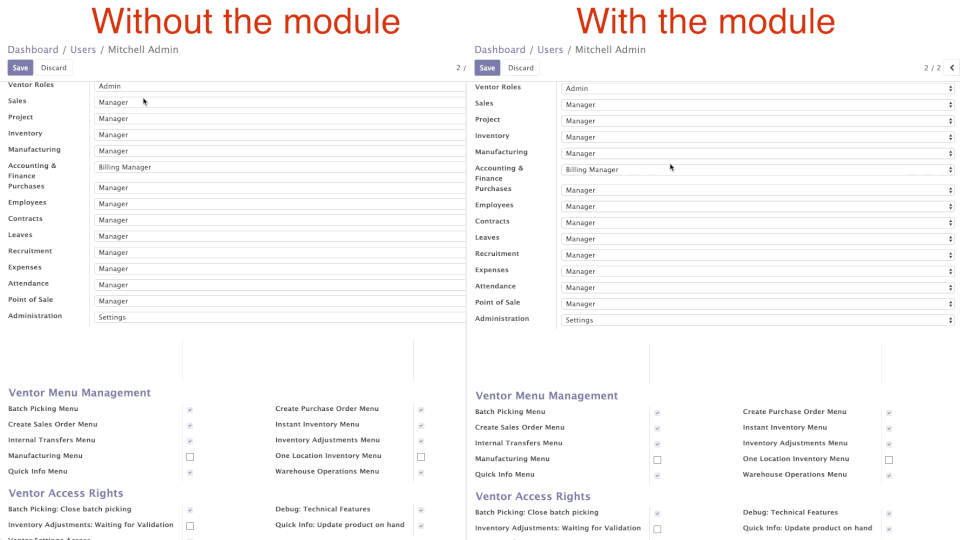

<section class="oe_container">
    <div class="oe_row">
        <div class="oe_span12">
            <h2 class="oe_slogan">Clear Groups on Change module</h2>
        </div>
        <div class="oe_span12">
            <p style="margin-left: 100px; padding-left: 15px; font-size: 16px; background-color: yellow; font-weight: bold; width: 800px">
                    TO AVOID ANY ISSUES, PLEASE, USE ALWAYS LATEST VERSION FROM
                    <a href="https://github.com/ventor-tech/merp/tree/12.0">
                        OUR GITHUB REPOSITORY
                    </a>
            </p>
            <div class="oe_row_img oe_centered">
                <p class="text-center" style="font-size: 14px">
                This module allows you to avoid such an annoying thing as manual check-box clearing for groups of access rights.
                </p>
                
                
                <p class="text-center" style="font-size: 14px"><a href="https://ventor.tech/">ventor.tech</a></p>
            </div>
        </div>
    </div>
</section>